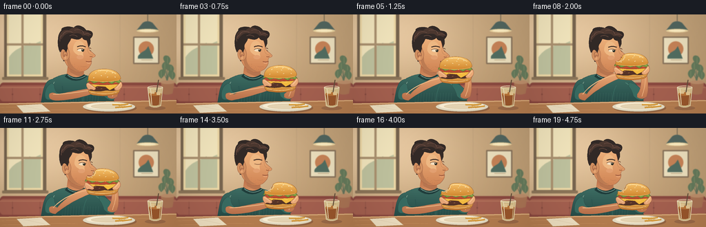
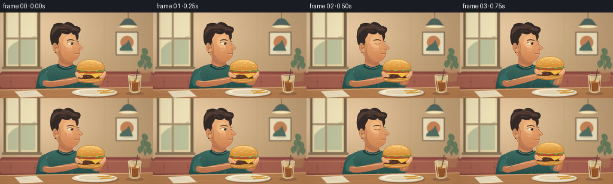

CODING AGENTS AS PIXEL WORLD MODELS
traex/GPT-6.1-Sol · motion_rationality_0001
点击播放 · 原生 RGB 像素
逐轮保存的候选
回放视频、检查图与代码变化。
每份候选均可单独播放。实际图片检查记录在下方工具轨迹中。
候选 01播放与检查图
点击播放 · 原生 RGB 像素


展开代码变化
--- 上一保存版本
+++ 本次保存版本
@@ -0,0 +1,349 @@
+"""Draw an original, temporally coherent restaurant illustration using Pillow."""
+from pathlib import Path
+import math
+import numpy as np
+from PIL import Image, ImageDraw, ImageFilter
+import artifact_io
+
+W, H, S = 256, 144, 4
+ROOT = Path(__file__).resolve().parent
+
+
+def points(commands):
+ out, last = [], (0, 0)
+ for cmd in commands:
+ op, *v = cmd
+ if op in ('M', 'L'):
+ last = tuple(v)
+ out.append(last)
+ elif op == 'C':
+ a = np.array(last); b = np.array(v[:2]); c = np.array(v[2:4]); d = np.array(v[4:6])
+ for t in np.linspace(0, 1, 22)[1:]:
+ p = (1-t)**3*a + 3*(1-t)**2*t*b + 3*(1-t)*t*t*c + t**3*d
+ out.append(tuple(p))
+ last = tuple(d)
+ elif op == 'Q':
+ a = np.array(last); b = np.array(v[:2]); c = np.array(v[2:4])
+ for t in np.linspace(0, 1, 16)[1:]:
+ out.append(tuple((1-t)**2*a + 2*(1-t)*t*b + t*t*c))
+ last = tuple(c)
+ return out
+
+
+class Painter:
+ def __init__(self, image, dx=0, dy=0):
+ self.im = image
+ self.d = ImageDraw.Draw(image)
+ self.dx, self.dy = dx, dy
+
+ def xy(self, p):
+ return ((p[0]+self.dx)*S, (p[1]+self.dy)*S)
+
+ def box(self, b):
+ return (self.xy(b[:2]) + self.xy(b[2:]))
+
+ def ellipse(self, b, fill, outline=None, width=.6):
+ self.d.ellipse(self.box(b), fill=fill, outline=outline, width=max(1, round(width*S)))
+
+ def rect(self, b, fill, radius=0):
+ self.d.rounded_rectangle(self.box(b), radius=radius*S, fill=fill)
+
+ def line(self, pts, fill, width=1):
+ self.d.line([self.xy(p) for p in pts], fill=fill, width=max(1, round(width*S)), joint='curve')
+
+ def path(self, cmds, fill=None, stroke=None, width=.7):
+ ps = [self.xy(p) for p in points(cmds)]
+ if fill is not None:
+ self.d.polygon(ps, fill=fill)
+ if stroke:
+ self.d.line(ps, fill=stroke, width=max(1, round(width*S)), joint='curve')
+
+ def shade(self, cmds, top, bottom, y0, y1, outline=None):
+ ps = [self.xy(p) for p in points(cmds)]
+ mask = Image.new('L', self.im.size)
+ ImageDraw.Draw(mask).polygon(ps, fill=255)
+ yy = np.arange(H*S)[:, None]
+ t = np.clip((yy/S-self.dy-y0)/(y1-y0), 0, 1)
+ colors = np.asarray(top)[None, None, :] * (1-t[..., None]) + np.asarray(bottom)[None, None, :] * t[..., None]
+ arr = np.broadcast_to(colors, (H*S, W*S, 3)).astype(np.uint8)
+ layer = Image.fromarray(arr)
+ self.im.paste(layer, (0, 0), mask)
+ if outline:
+ self.d.line(ps+[ps[0]], fill=outline, width=2, joint='curve')
+
+
+def background():
+ yy, xx = np.mgrid[:H*S, :W*S]
+ light = np.exp(-((xx/S-45)**2/120**2+(yy/S-30)**2/80**2))
+ arr = np.empty((H*S, W*S, 3))
+ for k, (v, a) in enumerate(zip((192, 159, 118), (45, 47, 48))):
+ arr[:,:,k] = v+a*light - yy/(H*S)*6
+ rng = np.random.default_rng(321)
+ arr += rng.normal(0, .65, (H*S,W*S,1))
+ im = Image.fromarray(np.uint8(np.clip(arr,0,255)))
+ p = Painter(im)
+ # The bright cafe window is a secondary, soft-focus shape.
+ p.rect((6,-4,67,94), '#796650', 1)
+ p.rect((10,-3,62,90), '#f1dba8')
+ p.rect((13,0,59,87), '#f5e8bf')
+ p.path([('M',13,62),('C',25,46,34,49,43,41),('C',49,46,54,40,59,39),('L',59,87),('L',13,87)], '#c1c4a0')
+ p.rect((31,-3,34,90),'#ac9270')
+ p.rect((10,42,62,45),'#ac9270')
+ p.rect((3,91,70,95),'#8d7659',1)
+ # Wall panelling and a framed abstract cafe print.
+ p.line([(174,0),(174,101)], '#bca07b', .7)
+ p.rect((193,32,231,72), '#87725a',1)
+ p.rect((195,34,229,70),'#ede0be')
+ p.ellipse((201,39,223,61),'#c78357')
+ p.path([('M',200,61),('C',207,51,210,56,215,46),('L',222,64),('L',200,64)], '#536e61')
+ p.line([(205,66),(221,66)], '#b79e78',.7)
+ # Pendant lamp.
+ p.line([(214,0),(214,12)], '#675f4f',1)
+ p.path([('M',207,12),('Q',214,8,221,12),('L',230,23),('Q',214,27,198,23),('L',207,12)], '#52665f')
+ p.ellipse((198,21,230,26),'#eed5a0')
+ p.ellipse((202,22,226,25),'#fff0c5')
+ # Booth.
+ p.rect((0,99,256,134),'#8b4940',5)
+ p.rect((0,103,256,126),'#a66150',5)
+ p.line([(0,106),(256,106)], '#bc7e62',1)
+ for x in (18,58,180,223):
+ p.line([(x,107),(x,126)], '#8e5145', .8)
+ p.ellipse((x-1,115,x+1,117),'#7d453c')
+ # Small leafy plant behind the sitter.
+ for x,y,a in [(239,74,-1),(248,78,1),(234,85,-1),(250,87,1),(243,65,1)]:
+ p.path([('M',243,105),('Q',242,86,x,y)],None,'#66755c',1)
+ p.path([('M',x,y+8),('C',x-9*a,y+1,x-7*a,y-7,x,y-5),('C',x+6*a,y-2,x+5*a,y+5,x,y+8)], '#667b5c')
+ p.line([(x,y+6),(x,y-3)],'#8f9b70',.5)
+ p.path([('M',233,98),('L',253,98),('L',250,115),('Q',242,118,236,115),('L',233,98)], '#ac7555')
+ p.ellipse((233,96,253,101),'#bf906c')
+ return im.filter(ImageFilter.GaussianBlur(.55*S))
+
+
+BG = background()
+
+
+def torso(p, lean):
+ # Neck first, then the ribbed dark sea-green shirt.
+ p.shade([('M',99,70),('L',121,70),('L',122,91),('Q',113,102,96,91),('L',99,70)],
+ (183,107,69),(219,151,104),72,95)
+ p.path([('M',101,77),('Q',111,88,121,80),('L',121,90),('Q',113,91,102,84)], '#b87650')
+ shirt = [('M',96,87),('Q',86,88,76,94),('C',65,96,62,108,59,132),('L',169,139),
+ ('C',163,116,159,99,143,94),('L',123,88),('Q',111,98,96,87)]
+ p.shade(shirt,(61,108,98),(31,66,64),89,141,'#304d48')
+ p.path([('M',97,86),('Q',110,96,122,87),('L',126,90),('Q',110,103,94,90),('L',97,86)], '#213f3d')
+ p.path([('M',98,88),('Q',110,98,124,89)],None,'#79a093',1)
+ p.path([('M',79,98),('Q',73,107,73,118)],None,'#789d8b',1)
+ p.path([('M',139,99),('Q',152,106,156,121)],None,'#508476',1)
+ p.path([('M',90,104),('Q',93,118,88,133)],None,'#2b5550',1)
+ p.path([('M',126,103),('Q',118,119,121,134)],None,'#386a60',.9)
+ # Subtle knit texture.
+ for x in range(95,146,4):
+ p.line([(x,114),(x-1,128)],'#426e63',.35)
+
+
+def head(p, opened, chew, blink):
+ # Far side hair and ear; face is a fixed three-quarter profile.
+ p.path([('M',86,46),('C',80,27,91,16,106,19),('C',124,16,132,27,131,42),
+ ('L',122,63),('L',92,68),('L',86,46)], '#352c28')
+ face = [('M',95,33),('C',105,29,119,29,125,37),('C',128,43,127,49,131,53),
+ ('Q',135,56,138,59),('Q',139,62,133,63),('L',132,67),
+ ('Q',134,71+chew,129,77+chew*.6),('C',123,85+chew*.4,110,86,101,78),
+ ('Q',94,72,92,60),('L',95,33)]
+ p.shade(face,(238,177,123),(207,130,83),34,86,'#a46345')
+ p.path([('M',96,42),('Q',101,51,101,66),('Q',104,78,116,82),
+ ('Q',106,83,100,77),('Q',94,65,96,42)], '#bd7c53')
+ p.path([('M',113,38),('Q',122,39,123,48),('Q',119,54,121,61),
+ ('Q',110,60,106,52),('Q',106,41,113,38)], '#efb883')
+ p.ellipse((88,48,101,67),'#d49261','#a36447',.5)
+ p.path([('M',93,62),('C',88,52,99,51,97,60),('Q',92,56,94,63)],None,'#a86749',.9)
+ p.ellipse((93,61,96,65),'#e8a573')
+ # Hairline with separate sculpted curls and warm edge lighting.
+ p.path([('M',87,55),('C',82,44,83,30,90,25),('C',85,18,100,16,107,19),
+ ('C',113,12,123,19,125,23),('C',137,23,136,31,131,35),
+ ('C',124,40,120,36,119,33),('C',114,40,105,34,103,35),
+ ('C',101,42,97,42,98,49),('L',96,55),('Q',92,48,89,52),('L',87,55)], '#332a27')
+ p.path([('M',86,34),('C',86,25,93,21,100,23),('C',106,16,116,19,118,25),
+ ('C',127,23,133,28,129,32),('C',125,30,122,30,120,31),
+ ('C',116,26,110,27,107,28),('C',99,25,93,29,89,36)], '#4c3830')
+ for path in [
+ [('M',91,30),('C',93,24,100,23,105,26)],
+ [('M',108,23),('C',115,20,122,24,121,28)],
+ [('M',122,29),('Q',128,26,132,30)],
+ [('M',87,39),('Q',86,33,90,30)],
+ [('M',101,31),('Q',106,28,112,32)]]:
+ p.path(path,None,'#715044',.7)
+ # Brows, gaze down toward the burger, and a small visible far eye.
+ p.path([('M',112,47),('Q',118,44,124,47)],None,'#49352b',1.5)
+ p.path([('M',129,49),('Q',131,48,132,50)],None,'#69432f',.8)
+ if blink:
+ p.path([('M',113,52),('Q',118,54,123,52)],None,'#6f4832',.85)
+ else:
+ p.path([('M',112,51),('Q',117,47.5,123,51),('Q',119,55,113,53),('L',112,51)], '#f4dfc0')
+ p.ellipse((118,49.9,122,54),'#483a2c')
+ p.ellipse((119.1,51,121.2,53.8),'#252d27')
+ p.ellipse((119,50.5,120,51.5),'#fff1d2')
+ p.path([('M',112,51),('Q',117,48,123,51)],None,'#6d4731',.7)
+ p.line([(130,52),(132,53)],'#68432f',.7)
+ p.path([('M',127,48),('Q',126,55,131,58),('Q',134,59,136,59)],None,'#c38657',.6)
+ p.path([('M',130,61),('Q',132,62,134,61)],None,'#915437',.65)
+ p.ellipse((111,59,121,65),'#e3a071')
+ # Jaw/cheek motion during chewing is small, with no sliding facial features.
+ if opened > .1:
+ mouth = [('M',125,67),('Q',130,65.5,134,66.7),
+ ('Q',137,68+opened*4,130,70+opened*5),('Q',125,71+opened*3,125,67)]
+ p.path(mouth,'#593329','#aa6446',.55)
+ p.path([('M',126,67.1),('Q',130,66.4,134,67.1),('L',133.1,68.5),('Q',129,69,126,68.2)],'#f8e5c7')
+ p.path([('M',128,70+opened*2),('Q',130,69+opened*2,132,70+opened*2)],None,'#b87862',.8)
+ else:
+ p.path([('M',124.5,68+chew*.3),('Q',129,69.4+chew*.5,133,67.8+chew*.2)],None,'#95543d',.9)
+ p.path([('M',126,70.2+chew*.3),('Q',129,71.5+chew*.3,131,70.4+chew*.3)],None,'#efaf83',.65)
+ p.path([('M',117,75+chew*.4),('Q',122,77+chew*.5,125,75+chew*.5)],None,'#be7a52',.55)
+ # A soft suggestion of stubble, never an unstable texture.
+ for x,y in [(105,73),(108,75),(112,78),(115,79),(118,80),(122,79),(125,76),(108,72),(114,76)]:
+ p.line([(x,y),(x+.2,y+.6)],'#b77951',.4)
+
+
+def arms(p, bx, by):
+ # Fixed shoulders and elbows, smoothly rotating forearms with attached wrists.
+ lx, ly = bx-19, by+10
+ rx, ry = bx+19, by+8
+ p.path([('M',76,100),('C',67,102,63,114,66,122),('Q',71,126,80,122),
+ ('L',85,115),('Q',79,112,79,103),('L',76,100)], '#396c62','#2d504b',.6)
+ p.shade([('M',72,115),('Q',77,112,83,116),('Q',103,ly+1,lx,ly-4),
+ ('L',lx+7,ly+3),('Q',103,ly+15,80,125),('Q',69,124,72,115)],
+ (230,163,113),(183,109,72),90,128,'#a96847')
+ p.path([('M',77,116),('Q',96,ly+5,lx,ly-1)],None,'#f0b985',1.3)
+ p.path([('M',144,99),('Q',157,100,164,113),('L',166,123),('Q',159,127,151,119),
+ ('Q',149,110,144,105),('L',144,99)], '#396d62','#2d514a',.6)
+ p.shade([('M',156,120),('Q',164,125,170,119),('Q',174,107,rx+3,ry-1),
+ ('L',rx-6,ry-3),('Q',rx-3,108,156,116),('L',156,120)],
+ (228,158,107),(184,109,73),90,128,'#a96847')
+ p.path([('M',163,119),('Q',169,105,rx+1,ry+1)],None,'#edb17e',1.1)
+ # Fingers supporting the bottom bun are behind the food.
+ p.path([('M',lx-2,ly+2),('Q',lx-7,ly-5,lx-4,ly-12),('Q',lx-2,ly-15,lx+1,ly-11),
+ ('L',lx+4,ly-5),('Q',lx+15,ly-1,lx+15,ly+3),('Q',lx+4,ly+8,lx-2,ly+2)], '#de9a68','#a86746',.55)
+ p.path([('M',rx+3,ry+3),('Q',rx+8,ry-3,rx+4,ry-10),('Q',rx+1,ry-15,rx-1,ry-9),
+ ('L',rx-5,ry-3),('Q',rx-14,ry-1,rx-12,ry+4),('Q',rx-3,ry+8,rx+3,ry+3)], '#e6a472','#a86746',.55)
+
+
+def burger(p, bx, by, bite):
+ # This same sandwich translates as a rigid object; the bitten notch persists.
+ q = Painter(p.im,bx,by)
+ # Lower bread roll.
+ q.shade([('M',-23,7),('Q',-23,15,-16,16),('Q',0,19,18,15),('Q',23,13,23,7),
+ ('Q',0,4,-23,7)],(236,176,82),(187,111,44),7,18,'#99572d')
+ q.path([('M',-19,12),('Q',0,17,18,12)],None,'#f4c780',1.1)
+ # Patty with a charred, irregular silhouette.
+ q.path([('M',-23,3),('L',-21,0),('Q',-9,-2,0,1),('Q',12,-2,23,2),('L',24,7),
+ ('Q',15,11,3,9),('Q',-7,12,-22,9),('L',-23,3)], '#573429','#392921',.65)
+ q.path([('M',-20,4),('Q',-5,2,3,4),('Q',17,2,22,4)],None,'#8e5435',1.1)
+ for x,y in [(-17,6),(-11,5),(-5,7),(4,6),(11,5),(17,6)]:
+ q.line([(x,y),(x+2,y-.5)],'#b47a48',.65)
+ # The triangular cheese corners make the hamburger unmistakable.
+ q.path([('M',-22,0),('L',-8,-1),('L',8,-1),('L',23,1),('L',16,5),('L',8,9),
+ ('L',2,4),('L',-10,3),('L',-17,7),('L',-22,0)], '#f5bd42','#c68e27',.45)
+ q.line([(-16,1),(1,1),(10,3)],'#ffdb65',.8)
+ # Tomato and ruffled lettuce.
+ q.path([('M',-22,-4),('Q',-4,-7,22,-4),('L',23,0),('Q',0,3,-23,0),('L',-22,-4)], '#bb4d32','#843b2b',.45)
+ q.path([('M',-19,-3),('Q',0,-4,19,-2)],None,'#eb8150',1)
+ q.path([('M',-24,-6),('L',-20,-8),('L',-15,-6),('L',-10,-8),('L',-4,-6),
+ ('L',3,-8),('L',9,-6),('L',15,-8),('L',22,-6),('L',25,-3),('L',22,-1),
+ ('L',16,-3),('L',11,0),('L',5,-3),('L',-2,-1),('L',-8,-3),
+ ('L',-15,-1),('L',-20,-4),('L',-25,-3),('L',-24,-6)], '#7b9b3f','#48632d',.55)
+ q.path([('M',-23,-5),('L',-16,-4),('L',-10,-5),('L',-4,-4),('L',4,-5),('L',10,-3),('L',18,-5),('L',22,-4)],None,'#b5c66b',.8)
+ # Bun dome. For a bite, its upper-left perimeter gains a natural scalloped indentation.
+ if bite <= 0:
+ bun = [('M',-23,-7),('C',-23,-18,-12,-22,0,-22),('C',13,-22,23,-17,24,-8),
+ ('Q',23,-5,17,-4),('Q',0,-2,-18,-4),('Q',-24,-4,-23,-7)]
+ else:
+ d = bite
+ bun = [('M',-23,-7),('L',-23,-10),('Q',-22+5*d,-9+2*d,-20+6*d,-12),
+ ('Q',-18+6*d,-12,-18+5*d,-15),('Q',-15+4*d,-14,-15+4*d,-18),
+ ('C',-9,-22,-3,-22,0,-22),('C',13,-22,23,-17,24,-8),
+ ('Q',23,-5,17,-4),('Q',0,-2,-18,-4),('Q',-24,-4,-23,-7)]
+ q.shade(bun,(249,197,109),(211,137,49),-22,-4,'#a16530')
+ q.path([('M',-9,-19),('Q',6,-22,17,-15)],None,'#ffe0a0',1.1)
+ q.path([('M',-20,-5),('Q',1,-1,22,-6)],None,'#f3bd6c',.65)
+ if bite:
+ q.path([('M',-22,-10),('Q',-18,-8,-14,-12),('Q',-11,-11,-11,-15),('Q',-9,-14,-10,-18)],None,'#f5d39a',1)
+ seeds = [(-12,-16,-.5),(-5,-19,.2),(4,-18,-.5),(12,-16,.4),(-4,-12,.4),(5,-10,-.3),(16,-10,.4),(-15,-9,-.3),(2,-15,.2)]
+ for x,y,a in seeds:
+ if bite and x < -10 and y < -11:
+ continue
+ q.line([(x-.7,y-a),(x+.7,y+a)],'#fff0c4',.8)
+ q.line([(x+.2,y+.8),(x+1,y+a+.6)],'#c48e43',.3)
+ # Foreground thumbs hold the same positions on the sandwich throughout.
+ q.path([('M',-22,9),('Q',-27,3,-25,-1),('Q',-23,-3,-20,0),
+ ('L',-13,5),('Q',-11,8,-15,9),('Q',-20,7,-22,9)],'#e8a778','#a86747',.55)
+ q.path([('M',-24,0),('Q',-19,2,-15,6)],None,'#f9c692',.9)
+ q.path([('M',21,9),('Q',28,5,26,-1),('Q',24,-5,22,-1),
+ ('L',16,5),('Q',13,8,17,9),('L',21,9)],'#edac79','#a86747',.55)
+ q.path([('M',24,-1),('Q',22,2,18,6)],None,'#ffd19b',.9)
+ q.path([('M',-18,13),('Q',-14,15,-9,13)],None,'#a96d4a',.55)
+ q.path([('M',14,13),('Q',18,14,21,11)],None,'#a96d4a',.55)
+
+
+def table(p):
+ p.path([('M',0,129),('L',256,124),('L',256,144),('L',0,144)], '#b67e50')
+ p.line([(0,130),(256,125)],'#e0b181',1.4)
+ for x,y in [(0,135),(3,141),(65,139),(191,132)]:
+ p.path([('M',x,y),('Q',x+22,y-1,x+47,y+.4)],None,'#c58e5e',.5)
+ # Porcelain plate, paper napkin, a few fries and a glass.
+ p.ellipse((122,129,198,143),'#986744')
+ p.ellipse((120,127,196,141),'#e6ddc4','#b9a98b',.5)
+ p.ellipse((125,128,191,138),'#fbefd4')
+ p.ellipse((132,130,184,137),'#e8d7b5','#d8c39d',.55)
+ p.path([('M',24,132),('L',60,130),('L',73,141),('L',34,143),('L',24,132)],'#f0e1c2','#d1b48b',.45)
+ p.line([(34,133),(64,139)],'#d7c4a1',.45)
+ p.line([(41,134),(57,133)],'#e3d1af',.5)
+ for x,y,a in [(172,131,1),(181,132,-1),(176,135,0),(186,135,-1)]:
+ p.path([('M',x-9,y-1),('L',x+5,y+a-2),('L',x+5,y+a),('L',x-9,y+1)],'#db9e3e','#b77d2e',.35)
+ p.line([(x-8,y-1),(x+4,y+a-2)],'#f9d17a',.6)
+ p.ellipse((210,133,240,139),'#9d6b48')
+ p.path([('M',214,106),('L',236,106),('L',233,133),('Q',225,137,217,133),('L',214,106)], '#d5bc87','#ead9b2',.7)
+ p.path([('M',216,116),('L',234,116),('L',232,131),('Q',224,134,219,131),('L',216,116)], '#9b572c')
+ p.ellipse((216,113,234,118),'#bb7538')
+ for b in [(219,110,224,115),(227,112,232,117)]:
+ p.rect(b,'#e6c893',.7)
+ p.line([(218,108),(220,131)],'#f4e5bf',1)
+ p.line([(233,108),(231,131)],'#e0cb9c',.7)
+ p.ellipse((214,103.5,236,108.5),None,'#f4e7c6',.75)
+ p.line([(227,113),(230,95)],'#654f3c',1.5)
+
+
+def smooth(x):
+ x = np.clip(x,0,1)
+ return float(x*x*(3-2*x))
+
+
+def frame(i):
+ t = i/4
+ rise = smooth((t-.35)/1.3)
+ lower = smooth((t-2.5)/1.15)
+ contact = rise*(1-lower)
+ bx = 151 - 3*contact
+ by = 101 - 23*contact + 1.0*lower
+ lean = 2.3*contact
+ opened = smooth((t-1.05)/.45)*(1-smooth((t-2.05)/.35))
+ bite = smooth((t-1.8)/.45)
+ chew = (0.7+0.65*math.sin((t-2.4)*math.pi*3)) if t>2.4 else 0
+ im = BG.copy()
+ p = Painter(im)
+ torso(p,lean)
+ head(Painter(im,lean,contact*.8),opened,chew,i in (2,14))
+ arms(p,bx,by)
+ burger(p,bx,by,bite)
+ table(p)
+ # Subpixel-quality antialiasing and a very soft photographic vignette.
+ im = im.resize((W,H),Image.Resampling.LANCZOS)
+ arr = np.asarray(im).astype(float)
+ yy,xx = np.mgrid[:H,:W]
+ vignette = 1-.07*((xx-128)**2/128**2+(yy-70)**2/120**2)
+ arr *= vignette[:,:,None]
+ return np.uint8(np.clip(arr,0,255))
+
+
+if __name__ == '__main__':
+ frames = np.stack([frame(i) for i in range(20)])
+ artifact_io.save(frames, ROOT)
+ print(f'Saved {len(frames)} RGB frames: {frames.shape}, {frames.dtype}')
可观测工具轨迹
实际执行的命令与返回图片。
命令 1exit 0
/bin/bash -lc 'ls -la && cat prompt.txt && cat GENERATION_RULES.md && cat task_spec.json'
命令 2exit 0
/bin/bash -lc "cat artifact_io.py && python - <<'PY'
import PIL,numpy
print('PIL',PIL.__version__)
PY"命令 3exit 0
/bin/bash -lc "python generate.py && python - <<'PY'
from pathlib import Path
import numpy as np
from PIL import Image
p=np.load('pixels.npz')['pixels']
f=np.stack([np.asarray(Image.open(f'frames/{i:02d}.png')) for i in range(20)])
print('Packed shape:',p.shape)
print('RGB frame shape:',f.shape)
print('Mean successive RGB change:',np.abs(np.diff(f.astype(float),axis=0)).mean())
for name in ['generate.py','pixels.npz','index.html','inspection.png','transition_check.png']:
q=Path(name);print(name,q.stat().st_size)
PY"命令 4exit 0
/bin/bash -lc 'if command -v ffmpeg >/dev/null 2>&1; then ffmpeg -hide_banner -loglevel error -y -framerate 4 -i frames/%02d.png -c:v libx264 -crf 17 -pix_fmt yuv420p -movflags +faststart video.mp4 && ls -lh video.mp4; fi'
保存候选 1 份；完成命令 4 次；可验证图片返回 0 张。原始 API 响应与完整日志保留在本地。